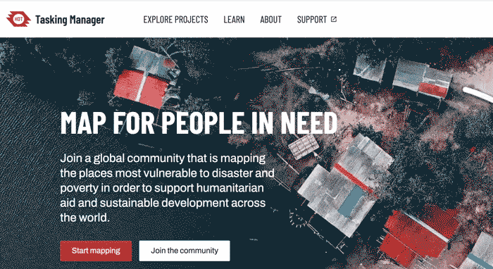
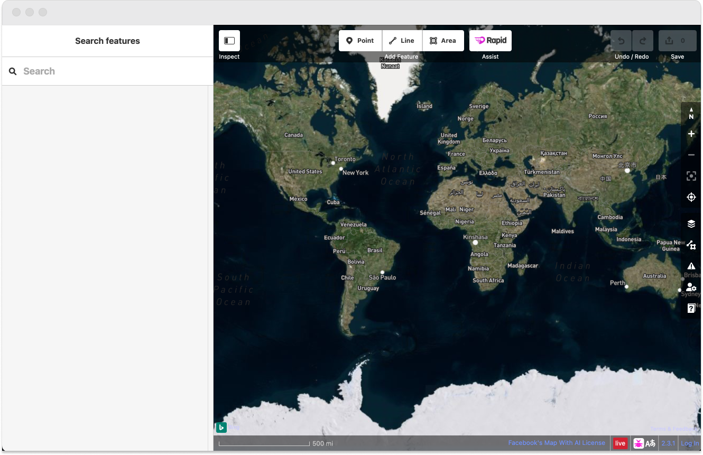
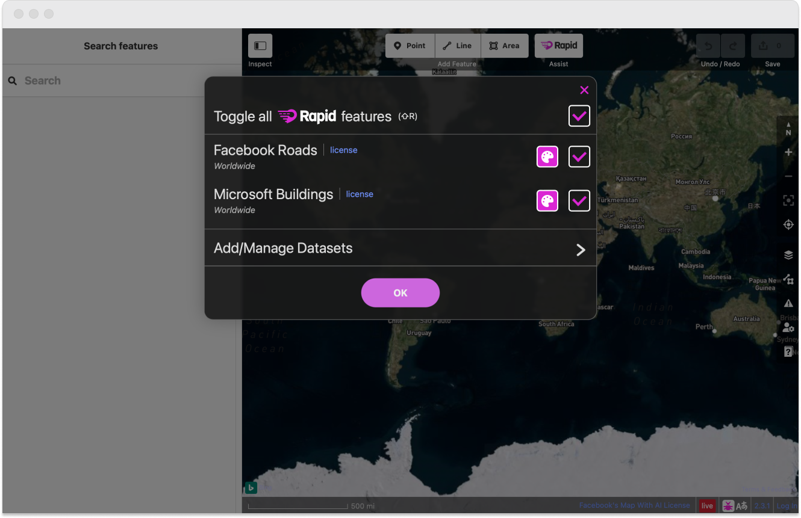
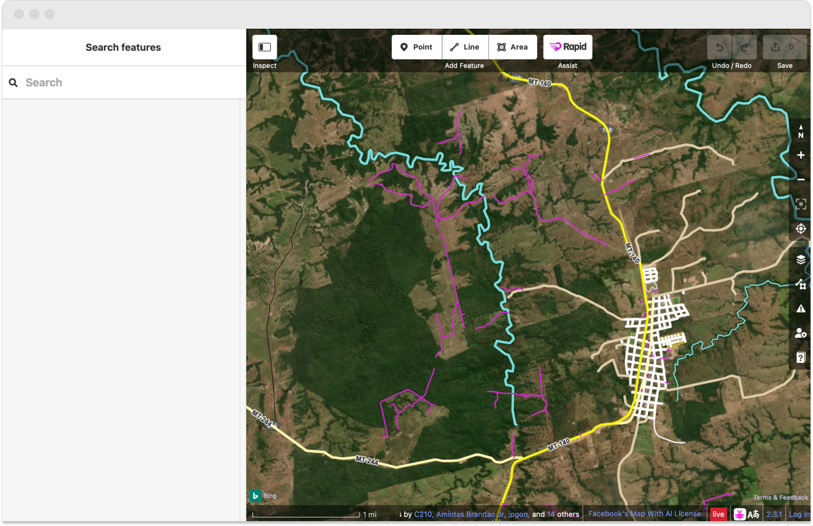
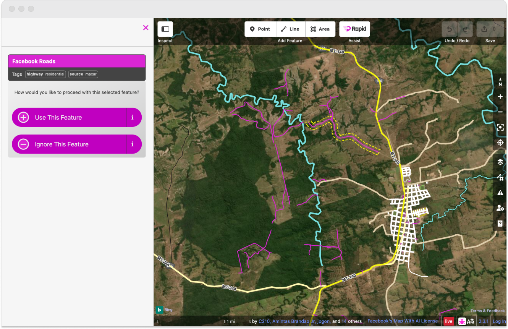
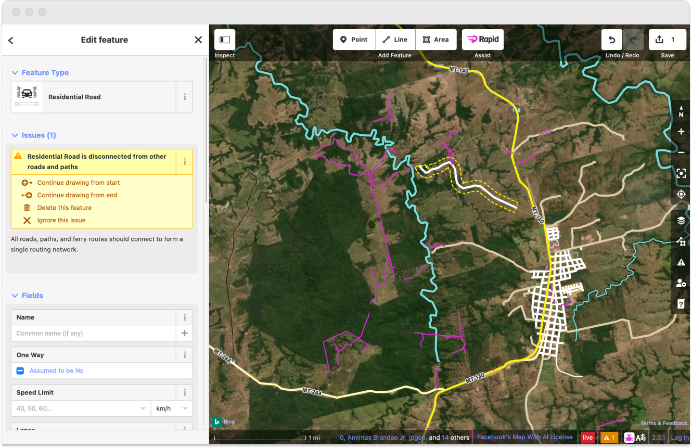
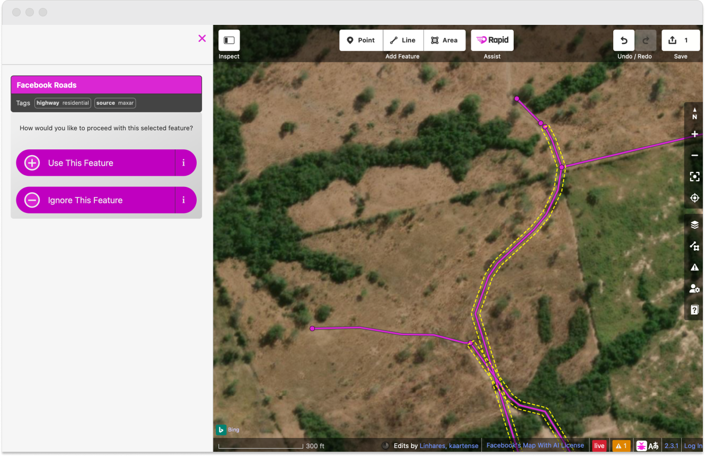
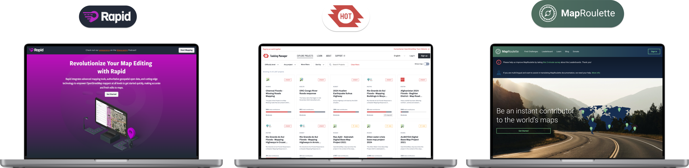

I joined Facebook as the sole designer on a new Boston-based team called World.AI. The company had just pivoted away from using Google to power their maps, and needed a way to blend the OpenStreetMaps open-sourced mapping tools with an ever increasing cloud of feature and location data that they were generating through AI.
I also got to build some really cool augmented reality powered mobile navigation tools, as well as some wearable prototyping for navigation.
The first data upload to OpenStreetMaps did not go well.
Using high definition satellite imagery, Facebook began hand mapping roads, features, and buildings to power AI training models. Within a few months we had a functioning global map data set. The first upload of LoCha’s (location change sets) to OpenStreetMaps was about a 50gb file containing around 250,000 new features. The Open Street Maps community revolted. The tight-knit, do it yourself global mapping community wanted nothing to do with Facebook, and immediately blocked our feature upload access. We needed a way to prove to the mapping community that we could be trusted, helpful, and useful.
Product & User Research
I began joining multiple "mapathon" events a month. A mapathon is when a group of 30-40 people get together to map a specific part of the globe in a coordinated effort to support some type of catastrophe, which could range from flooding, to draught, to an earthquake location, etc.
Mapathon's utilized OpenStreetMaps tools for these events, so it was a great opportunity to learn the product we'd be building upon, as well as integrate with the community.

Prototyping & Design
The overarching problem we were trying to solve was: how do we introduce and integrate hundreds of thousands of AI detected features into a mapping tool that has a passionate community of daily users.
Secondary problems involved onboarding, speed, functionality, zoom levels, saving, etc. I worked initial designs together in Sketch and Invision before fulling integrating the product later into a larger team in Figma.

Initial load on the RapiD mapping tool puts you at a full zoom level. Launching from a HOT task will open the tool directly to needed mapping features.

The toggle for RapiD allows the user to turn on or off both predicted roads or predicted buildings, adjust the color of each predicted feature, or upload their own generated datasets.

Once you zoom in close enough on an area for map features to show up, the RapiD AI detected features appear.

When the user selects a feature, it becomes highlighted to show the full length that has been predicted, and will be added to the map.

After adding the feature, the user is able to update the details of the feature, with the majority of the data being pre-filled by RapiD's AI predictions.

Zooming in closer, you are able to see that each predicted feature is defined by multiple vectors points, illustrating extra clicks a user would have to be making in order to draw these features by hand.
Product Launch, Adoption, and Results
The design process took about 2 months of user interviews and research, then around another 2 months of design and design iterations, and about 3 months of dev and dev support. We launched a beta product about six months after getting started, and I brought it on a user testing tour to several mapathons to give users a chance to see what we were doing, and to try it out.

During the dev process, I branded the product and bought mapwith.ai, then designed a landing page. Our official launch was about months after getting started.
By the end of the year we had integrated Rapid with not only OpenStreetMap's tools, but it was fully adopted by HOT Tasking and MapRoulette. Rapid increased the speed at which a user could map an entire by 110x. Earlier the next year we packaged up our entire feature set and offered it as a public offering called Daylight.